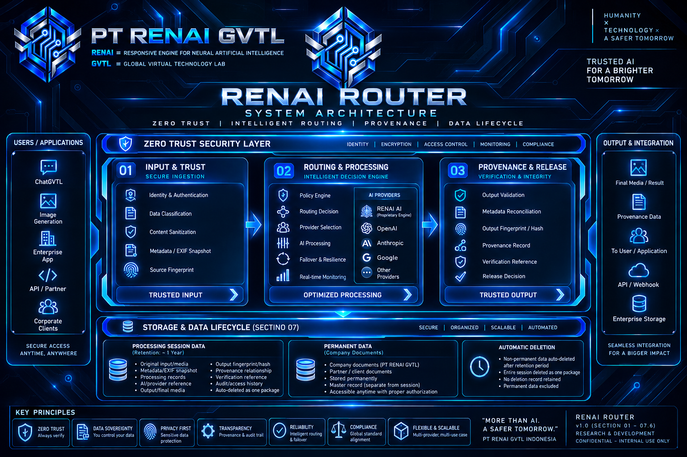

Catatan internal mengenai lanjutan review dan pematangan RENAI Router Master Blueprint v1.0 pada 12 September 2026, dengan pembahasan Section 06.13 hingga Section 07.6.

Pada 12 September 2026 , PT RENAI GVTL Indonesia melanjutkan review terhadap RENAI Router Master Blueprint v1.0 melalui internal R&D meeting.
Meeting berlangsung pada 17.52–18.56 WIB dengan durasi 1 jam 04 menit dan berfokus pada penyelesaian Section 06 serta pembahasan awal Section 07 mengenai storage dan data lifecycle.
Kegiatan:
Internal R&D Meeting — RENAI Router
Peserta:
Redian & Ibu Airin
Waktu:
17.52–18.56 WIB
Durasi:
1 jam 04 menit
Progress:
Section 06.13 → Section 07.6
Status:
🟢 Ditutup
Review hari ini berhasil menyelesaikan Section 06.13 serta Section 07.1–07.6 .
Section 06.13 membahas state akhir processing session dan bagaimana RENAI Router membedakan kondisi selesai, gagal, ditolak, atau dibatalkan.
Status: 🟢 APPROVED
Section 07 membahas bagaimana komponen processing session disimpan, berapa lama data dipertahankan, bagaimana automatic deletion dilakukan, serta bagaimana data permanen dipisahkan dari lifecycle processing session.
Seluruh komponen relevan dari processing session wajib disimpan, meliputi:
Status: 🟢 APPROVED
Semua data wajib disimpan, tetapi masa retensi berbeda berdasarkan jenis data.
Ketentuan yang disepakati:
Status: 🟢 APPROVED
Data yang masa retensinya telah berakhir akan:
dihapus secara otomatis oleh RENAI Router.
Pengecualian:
Data dengan kategori permanent retention tidak ikut automatic deletion.
Status: 🟢 APPROVED
Setelah data non-permanen dihapus:
Status: 🟢 APPROVED
Seluruh data yang menjadi bagian dari satu processing session diperlakukan sebagai satu paket lifecycle.
Ketika masa retensi session berakhir:
seluruh paket data session dihapus bersama-sama.
Tidak digunakan retention timer yang berbeda-beda untuk setiap komponen dalam session yang sama.
Status: 🟢 APPROVED
Untuk data permanen yang digunakan oleh beberapa processing session:
Data permanen tersebut menjadi master record terpisah.
Penghapusan suatu processing session tidak boleh menghapus master record permanen.
PERMANENT CORPORATE DOCUMENT
│
├── Session A
├── Session B
├── Session C
└── Session D
│
▼
Session A expired
│
▼
Session A deleted
│
▼
MASTER DOCUMENT → TETAP ADA
Dengan demikian, lifecycle session dan lifecycle master record permanen dipisahkan.
Status: 🟢 APPROVED
Review pada 12 September 2026 berhasil menyelesaikan:
➡️ Section 07.7 — belum dibahas
Meeting ditutup pada 18.56 WIB .
Status akhir meeting: 🟢 Ditutup
© PT RENAI GVTL Indonesia — Research & Development (R&D)